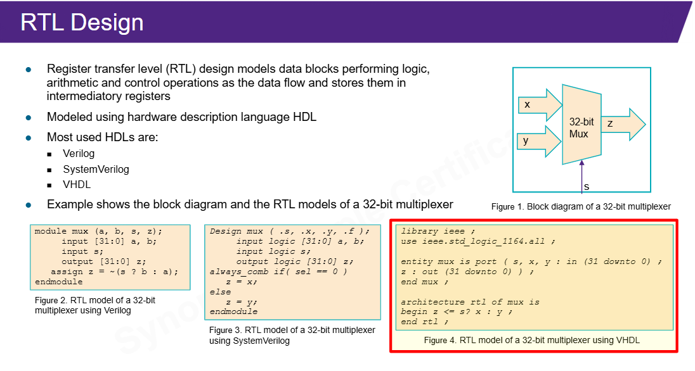
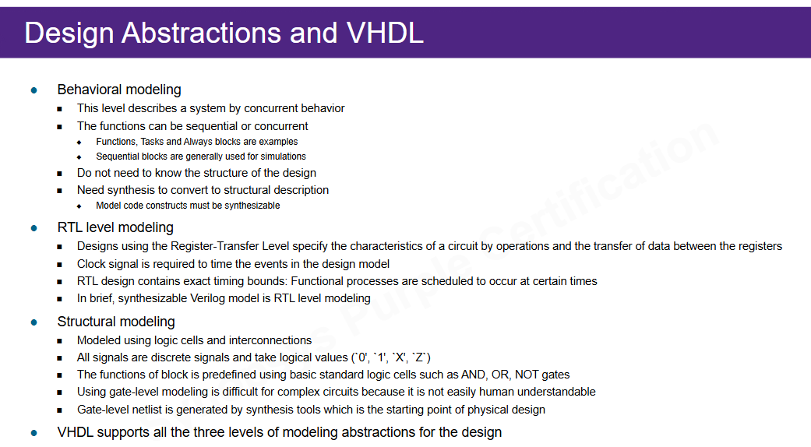
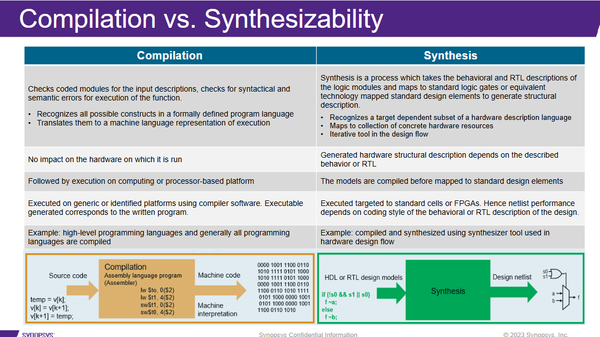
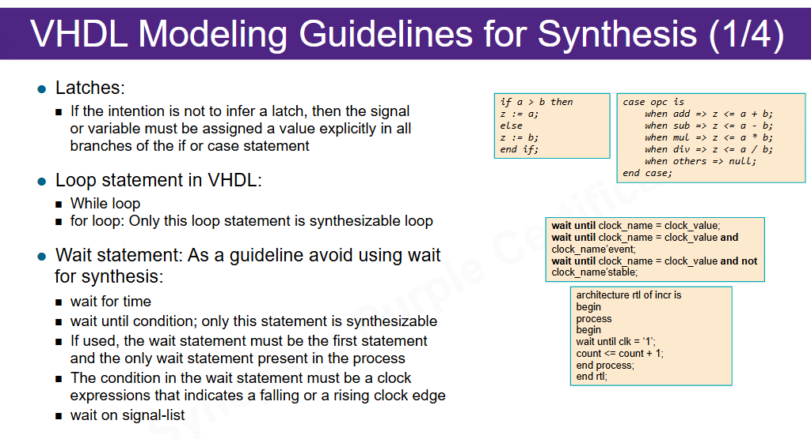
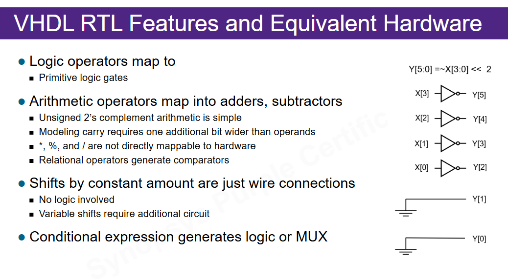

Ideia central
VHDL não é apenas uma sintaxe alternativa a Verilog. Ele organiza hardware com uma disciplina própria: bibliotecas, entidade, arquitetura, tipos fortes, statements concorrentes e processos sequenciais.
linguagem VHDL -> modelo RTL -> hardware inferidoO objetivo da aula é fazer você olhar para uma linha VHDL e perguntar: que hardware essa linha está tentando criar?
Entidade e arquitetura
Em VHDL, a entidade define a interface do bloco. A arquitetura define a implementação. Esse par é a base para ler qualquer arquivo VHDL de design.

entity mux is
port (
s : in std_logic;
x : in std_logic_vector(31 downto 0);
y : in std_logic_vector(31 downto 0);
z : out std_logic_vector(31 downto 0)
);
end mux;Leia a entidade como contrato: quais sinais entram, quais saem e qual largura cada um tem. A arquitetura responde como esse contrato será implementado.
Detalhe: por que library ieee e use ieee.std_logic_1164.all aparecem tanto?
Esses comandos trazem para o arquivo tipos e operações usados em RTL, especialmente
std_logic e std_logic_vector. Sem eles, o compilador pode não
conhecer esses tipos. Em VHDL, dependências de pacote são parte explícita do código.
Concorrência e process
Statements dentro da arquitetura são concorrentes: eles descrevem hardware ativo em paralelo.
Um process cria uma região de código sequencial, mas isso não significa software.
process(a, b, sel)
begin
if sel = '0' then
y <= a;
else
y <= b;
end if;
end process;
Esse processo parece um programa com if, mas o hardware inferido é um mux.
A pergunta correta não é “qual linha executa primeiro?”, e sim “qual circuito esse padrão descreve?”.
Combinacional ou sequencial?
Um processo combinacional depende dos sinais de entrada e deve atribuir todas as saídas
em todos os caminhos. Um processo sequencial usa borda de clock, normalmente com
rising_edge(clk), e infere registradores.
Tipos e vetores
VHDL é fortemente tipado. Isso deixa o código mais explícito, mas exige cuidado com conversões e aritmética.
std_logic: sinal de um bit com estados como 0, 1, X, Z e U.std_logic_vector: vetor de sinais, útil para barramentos.unsigned/signed: melhores para aritmética quando se usanumeric_std.
std_logic_vector não é automaticamente “número”.
Pode ser opcode, máscara, barramento, estado codificado ou valor aritmético. O tipo deve deixar a intenção clara.
Níveis de abstração

| Nível | Como ler | Risco |
|---|---|---|
| Behavioral | descreve comportamento em nível alto | pode usar constructs não sintetizáveis |
| RTL | descreve registradores e lógica entre eles | é o alvo principal da síntese |
| Structural | instancia blocos/células conectados | pode ficar difícil de manter em alto nível |
Compilar não é sintetizar
Este é o slide mais importante do bloco. Ele corrige uma confusão perigosa: se o VHDL compila, isso só diz que ele passou por regras de linguagem. Não diz que vira hardware aceitável.

VHDL que compila não necessariamente sintetiza.Exemplos que podem compilar e ainda assim não servir para RTL
wait for 10 nsno design RTL.- File I/O dentro do módulo que deveria virar hardware.
- Delays temporais usados como comportamento real.
- Loops sem limite estático.
- Constructs de testbench colocados na filelist de síntese.
Latch, loop e wait

Latch acidental nasce quando uma saída combinacional não recebe valor em todos os caminhos.
process(a, b, sel)
begin
if sel = '1' then
y <= a;
end if;
end process;
Se sel não for 1, o que acontece com y? A ferramenta pode inferir que
y deve manter valor anterior. Isso é latch.
Forma mais segura com default
process(a, b, sel)
begin
y <= b;
if sel = '1' then
y <= a;
end if;
end process;
O default dá valor a y antes dos ramos condicionais. Isso reduz o risco de
esquecer uma atribuição e deixa claro que a lógica é combinacional.
Loop e wait em síntese
Um for com limite fixo pode virar hardware repetido ou estrutura regular.
Um while com condição dinâmica é problemático porque a ferramenta não sabe
quantas repetições precisa materializar.
Para clock, prefira elsif rising_edge(clk). O uso de wait em RTL
sintetizável é restrito e fácil de errar.
Operadores e hardware inferido

| VHDL | Hardware provável |
|---|---|
and, or, not, xor | portas lógicas |
+, - | somador/subtrator |
| comparações | comparadores |
| expressão condicional | mux ou lógica equivalente |
| shift constante | conexões de fios |
| shift variável | circuito adicional de deslocamento |
Ligação com o projeto
Mesmo se o RTL_LAB2 estiver em Verilog/SystemVerilog, esta aula ajuda a auditar qualquer
arquivo VHDL que apareça no ambiente do professor.
- O arquivo tem
entityearchitecturede design? - É RTL sintetizável ou testbench?
- Usa libraries/packages que precisam entrar no fluxo?
- Tem
wait for, file I/O ou delays de simulação? - Tem processos combinacionais incompletos?
- Pode entrar em
filelist_rtl.f?
Audio: precisa?
Não parece necessário ouvir o áudio completo. O áudio seria útil apenas se o professor tiver
dado exemplos extras de signal versus variable, syntax de process,
uso de packages ou quizzes sobre wait e loop.
Base Markdown: aula didática, cobertura slide a slide.